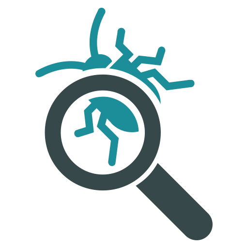

9.0.0.10
—

Just in case Fundamentals 1 and 2 did not explain debugging in the context of
systematically designed code, here are basic hints:
turn a failing integration test into failing unit tests;
if a method fails its unit test, turn the failing test into unit tests for the functions it calls.
this method identifies a method that misbehaves but its dependencies pass all tests. That’s the location of the bug.
By creating these tests, you ensure that future edits do not re-introduce the
same or similar bugs.
If your methods "collude" to achieve a common goal, the “location” may consist of two disjoint methods. You will need to understand the logic that connects those.
In other words, systematic debugging is just like systematic coding. It sounds like it takes extra time but you’re guaranteed to get to the goal. So, in the end, it actually saves time in different ways.